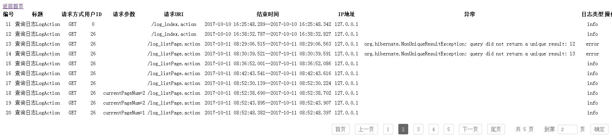

大多情况下不需要一次性查询多条数据，只需查询几条显示出来即可，这里需要用到分页。
前提：在实现日志记录的基础上
package com.linyi.utils;
import java.util.List;
public class PageUtil {
private int currentPageNum;
private int startPageNum;
private int endPageNum;
private int countPageNum;//总页数
private int countNum;//总记录数
private List list;
private int showPageCount = 2;//每页显示记录数
public PageUtil() {
}
public PageUtil( int countNum,int currentPageNum, int showPageCount) {
this.countNum = countNum;//总条数
this.currentPageNum = currentPageNum;//当前页数
if (showPageCount==0){
this.showPageCount=2;//每页显示数
}else {
this.showPageCount = showPageCount;
}
this.setCountPageNum();//总页数
// this.setStartPageNum();//开始页数
// this.setEndPageNum();//结束页数
this.setStartEndPage();//设置其实结束页面
// this.setEndPageNum();
}
public void setStartEndPage() {
//开始页由1开始
startPageNum = 1;
//开始页为结束页减去4
endPageNum = countPageNum;
//判断总页码是否大于5
if(countPageNum>5){
//判断当前页码是否大于总页码
if(currentPageNum>countPageNum){
currentPageNum=countPageNum;//当前页大于总页数，总页数就等于结束页
}
if(currentPageNum<=0){
currentPageNum = 1;
}
//判断当前页码是否大于3
if(currentPageNum>=3){
//如果总页数-当前页大于等于2，结束也为当前页+2
if(countPageNum-currentPageNum>=2){
endPageNum = currentPageNum+2;
}else {
//如果总页数减去当前页小于2，结束页为当前页+总页数-当前页
endPageNum = currentPageNum+(countPageNum-currentPageNum);
}
startPageNum = endPageNum-4;
}else if (currentPageNum<3){
endPageNum = startPageNum+4;//如果当前页码小于3，就是起始页码+4
}
}
}
public int getCurrentPageNum() {
return currentPageNum;
}
public void setCurrentPageNum(int currentPageNum) {
this.currentPageNum = currentPageNum;
}
public int getStartPageNum() {
return startPageNum;
}
public void setStartPageNum() {
// this.startPageNum = startPageNum;
}
public int getEndPageNum() {
return endPageNum;
}
public void setEndPageNum() {
// this.endPageNum = endPageNum;
}
public int getCountPageNum() {
return countPageNum;
}
//设置总页数
public void setCountPageNum() {
double res = this.countNum/(double)this.showPageCount;
this.countPageNum = (int)Math.ceil(res);
}
public int getCountNum() {
return countNum;
}
public void setCountNum(int countNum) {
this.countNum = countNum;
}
public List getList() {
return list;
}
public void setList(List list) {
this.list = list;
}
public int getShowPageCount() {
return showPageCount;
}
public void setShowPageCount(int showPageCount) {
this.showPageCount = showPageCount;
}
/**
* 计算当前页起始记录
* @param pageSize 每页记录数
* @param currentPage 当前第几页
* @return
* 为了求出从第几条数据显示到第几条 这里offset是起始数值
*/
public Integer countOffset(Integer pageSize,Integer currentPage){
Integer offset = pageSize*(currentPage-1);
return offset;
}
}
2.以分页的方式请求记录等属性，算是一个特殊方法我们在LogService接口下加入新方法
package com.linyi.service;
import com.linyi.bean.Log;
import com.linyi.fengzhuang.BaseService;
import com.linyi.utils.PageUtil;
import java.util.List;
public interface LogService<T> extends BaseService<T> {
public PageUtil getLogsByPage(Integer currentPage, Integer pageSize);
}
3.在LogServiceImpl.java也就是LogService的实现类里实现方法
package com.linyi.service.impl;
import com.linyi.bean.Log;
import com.linyi.dao.LogDao;
import com.linyi.fengzhuang.BaseServiceImpl;
import com.linyi.service.LogService;
import com.linyi.utils.PageUtil;
import org.springframework.beans.factory.annotation.Autowired;
import org.springframework.stereotype.Service;
import org.springframework.transaction.annotation.Transactional;
import java.io.Serializable;
import java.util.List;
@Service
public class LogServiceImpl extends BaseServiceImpl<Log> implements LogService<Log>{
@Autowired
private LogDao<Log> logDao;
public LogServiceImpl(LogDao logDao){
super.setBaseDao(logDao);
this.logDao = logDao;
}
@Transactional
public PageUtil getLogsByPage(Integer currentPage, Integer pageSize) {
Integer allRow = logDao.getCount();//总条数
PageUtil page = new PageUtil(allRow,currentPage,pageSize);
List<Log> logs = logDao.queryForPage(page.countOffset(page.getShowPageCount(),page.getCurrentPageNum()),pageSize);
page.setList(logs);
return page;
}
}
4.在BaseDao接口加入
//得到总条数
public Integer getCount();
//limit
public List<T> queryForPage(int offset, int length);
5.实现第四步的方法在BaseDaoImpl里
public Integer getCount() {
// sessionFactor
Query q = sessionFactory.getCurrentSession().createQuery("SELECT COUNT (*) FROM "+className);
return Integer.parseInt(q.list().get(0).toString());
}
public List<T> queryForPage(int offset, int length) {
Query q = sessionFactory.getCurrentSession().createQuery("FROM "+className);
q.setFirstResult(offset);
q.setMaxResults(length);
return q.list();
}
6.jsp页面改动
<%--
Created by IntelliJ IDEA.
User: Hai
Date: 2017/9/27
Time: 10:53
To change this template use File | Settings | File Templates.
--%>
<%@ page contentType="text/html;charset=UTF-8" language="java" %>
<%@ taglib prefix="s" uri="/struts-tags" %>
<html>
<head>
<title>日志记录</title>
<script src="/js/jquery-1.11.1.min.js"></script>
<style>
body{box-sizing: border-box; padding: 20px}
ul,li{list-style: none}
ul{width: auto; height: auto; overflow: hidden; margin: 20px auto; float: right}
ul li{margin: 0 8px; float: left; line-height: 32px; color: #555555}
ul li a{ display: block; padding:5px 10px; float: left; color: #666; border-radius: 3px; border: 1px solid #d1d1d1; text-decoration: none; line-height: 20px}
ul li a:hover{text-decoration: underline}
#page{width:60px; padding:3px 10px; color: #666; border-radius: 3px; border: 1px solid #d1d1d1; text-decoration: none; line-height: 20px}
ul li .abg{background: #666666; border-color:#666666; color: #ffffff}
table{width: 100%; line-height: 30px; text-align: center}
</style>
</head>
<body>
<a href="/index.jsp">返回首页</a>
<table cellspacing="0" cellpadding="0">
<tr>
<th>编号</th>
<th>标题</th>
<th>请求方式</th>
<th>用户ID</th>
<th>请求参数</th>
<th>请求URI</th>
<th>结束时间</th>
<th>IP地址</th>
<th>异常</th>
<th>日志类型</th>
<th>操作</th>
</tr>
<s:iterator value="#logPage.list">
<tr>
<td><s:property value="id"/></td>
<td><s:property value="title"/></td>
<td><s:property value="method"/></td>
<td><s:property value="userId"/></td>
<td><s:property value="params"/></td>
<td><s:property value="requestUri"/></td>
<td><s:property value="timeThrough"/></td>
<td><s:property value="remoteAddr"/></td>
<td><s:property value="exception"/></td>
<td><s:property value="type"/></td>
<%--<td><a href="log_delete.action?did=<s:property value="id"/>">删除</a> </td>--%>
</tr>
</s:iterator>
</table>
<ul>
<li>
<s:if test="%{#logPage.currentPageNum != 1}">
<a href="log_listPage.action?currentPageNum=1">首页</a>
</s:if>
</li>
<li>
<s:if test="%{#logPage.currentPageNum > 1}">
<a href="log_listPage.action?currentPageNum=<s:property value="%{#logPage.currentPageNum - 1}"/> ">上一页</a>
</s:if>
</li>
<s:iterator begin="%{#logPage.startPageNum}" end="%{#logPage.endPageNum}" var="v">
<li>
<s:if test="%{#logPage.currentPageNum == #v}">
<a class="abg" href="log_listPage.action?currentPageNum=<s:property value="v"/> "><s:property value="v"/></a>
</s:if>
<s:else>
<a href="log_listPage.action?currentPageNum=<s:property value="v"/> "><s:property value="v"/></a>
</s:else>
</li>
</s:iterator>
<li>
<s:if test="%{#logPage.currentPageNum<#logPage.countPageNum}">
<a href="log_listPage.action?currentPageNum=<s:property value="%{#logPage.currentPageNum + 1}"/> ">下一页</a>
</s:if>
</li>
<li>
<s:if test="%{#logPage.currentPageNum != #logPage.countPageNum}">
<a href="log_listPage.action?currentPageNum=<s:property value="%{#logPage.countPageNum}"/>"/> 尾页</a>
</s:if>
</li>
<li> 共 <s:property value="#logPage.countPageNum"/> 页 </li>
<li>到第<s:textfield id="page" value="%{#logPage.currentPageNum}"/>页</li>
<li> <a href="javascript:location.href='log_listPage.action?currentPageNum='+$('#page').val();">确定</a></li>
</ul>
</body>
</html>
实现效果：
